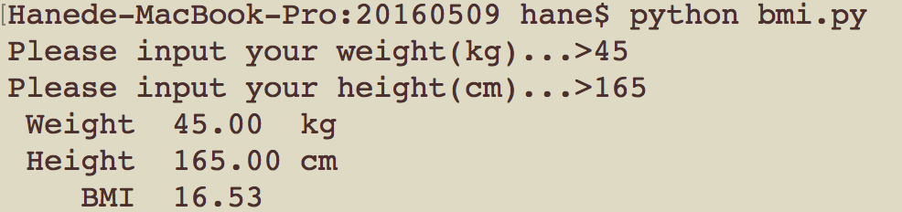
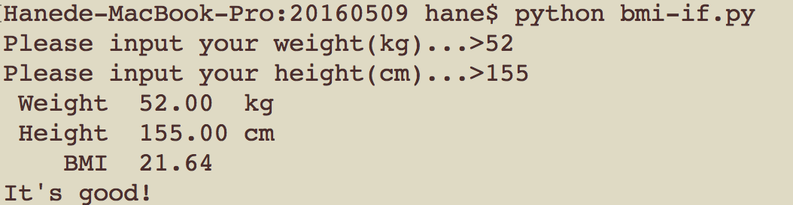
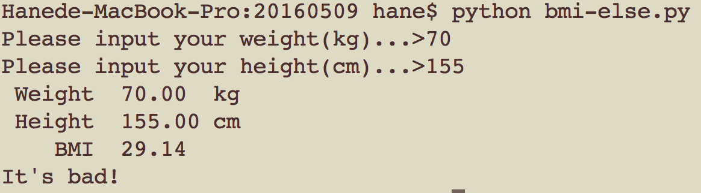

Python 入門 - 2
劉慈恩
2016/5/9
Outline for today
- Review
- Sequence Data Types
- Standard input & output
- Conditional statement
Review
環境設置
Python 簡介
Basic Data Types
Number
String
Boolean
Variable
IDE
\Sublime Text/
Sequence Data Types
list, tuple, dict & set
先來聊聊immutable
immutable 不可變的
大多數資料型態為 immutable
Whyyyyyyyyy?
這就要從指派變數說起了...
a = 123 # integer
a = "abc" # stringIs a mutable?
其實變數只是個有名稱的箱子
可以裝不同型態的資料
指派就是取出舊資料再放入新資料
可以指派變數不代表資料型態是可變動的喔0.<
到底什麼是 immutable ?
試試以下程式碼：
a = 1 # line 1
print(id(a)) # line 2
a += 2 # line 3
print(id(a)) # line 4Line 2 和 Line 4 會不同
還是不懂？
再試試：
s = "123" # line 1
print(s[0]) # line 2
s[0] = 'a' # line 3會出現 TypeError
Immutable data types
- String
- Number(integer, real, complex)
- Boolean
- Tuple
Mutable data types
- List
- Dictionary
- Set
Tuple(元組)
- Array-like
- Immutable
- 以小括號表示()
- 每個 element 可以為不同型態
a = (1, 2, '3')List
- Array-like
- Mutable
- 以中括號表示[]
- 每個 element 可為不同型態
b = ['4', 5, 6]Tuple 和 List 的數學運算
相加
(1, 2, 3) + (4, 5, 6)
[1, 2, 3] + [4, 5, 6]
倍增
(1, 2, 3) * 5
[4, 5, 6] * 7String 也適用
Tuple 和 List 的取值運算
正數取值
a = (1, 2, '3')
a[2]
負數取值
b = ['4', 5, 6]
b[-1]String 也適用
Tuple 和 List 的切片(?)運算
[ start : end : step ]

Tuple 和 List 的切片(?)運算
a = [1, 2, 3, 4, 5, 6]
a[0:]
a[:5]
a[::-1]
a[0:5:3]切片後不會影響原來的序列
String 也適用喔～
Tuple v.s List
List can do
a = [1, 2, 3, 4, 5, 6]
# print(id(a))
a[0] = 0
# print(id(a))
a += [7, 8, 9]
# print(id(a))
Tuple cannot do
b = (1, 2, 3, 4, 5, 6)
b[-1] = 7 # Error!
b += (7, 8, 9) # Error!So, Tuple is immutable, and List is mutable!
Tuple 到底能幹嘛？
可以一次指派多個變數
(a, b, c) = (1, 2, 3)
a, b, c = 1, 2, 3 # The same as previous line或許你想試試
a, b = 1, 2, 3然後... 他就屎掉惹RRRRRRRRR
轉型
將 String , List 轉成 Tuple
tuple()將 String, Tuple 轉成 List
list()另類的 List：Dict
- 使用不同的索引值：key
- key 可使用所有 immutable 的資料型態
- value 則不限資料型態
- hash table 的概念
- 以大括號表示
- 內部資料以
key: value型式表示
d = {'a': 1, 8: 'gg', (1, 2, 3): [4, 5, 6]}Dict 的取值運算
d = {'a': 1, 8: 'gg', (1, 2, 3): [4, 5, 6]}
d['a']Then, you can try......
d['b']不能使用不存在的 key 取值！
如何新增 key？
d = {'a': 1, 8: 'gg', (1, 2, 3): [4, 5, 6]}
d['hello'] = 'world'直接對新 key 指派值即可
Dict 和 List 刪除元素
直接使用 del 陳述句即可
List
a = [1, 2, 3, 4, 5, 6]
del a[1]
# print(a)Dict
d = {'a': 1, 8: 'gg', (1, 2, 3): [4, 5, 6]}
del d[8]
# print(d)Dict v.s List
Dict can do
d = {'a': 1, 8: 'gg', (1, 2, 3): [4, 5, 6]}
d['new'] = 'new value'List cannot do
a = [1, 2, 3, 4, 5, 6]
a[6] = 7Why key cannot be mutable？
假設我們使用一個 list 作 key...
t = [1, 2, 3] # Assign a list to variable t
test = {t: 'list'} # Use t as a key in test然後增加 list 中的值...
t += [4, 5, 6]dict 中會怎麼變化呢...
test[[1, 2, 3]]
test[[1, 2, 3, 4, 5, 6]]哪一種方式可以取到值呢？
Why key cannot be mutable？(cont.)
或許你會認為這樣可行...
test[t]那麼......
[1, 2, 3]和[1, 2, 3, 4, 5, 6]是相同的嗎？
也許只要 id 相同就表示是相同的
但在 python 中不允許使用 id 存取資料喔！
難道知道你家住哪，就可以對你為所欲為？
不重複的資料集合：Set
- 元素都是單一不可重複的
- 可作聯集、交集等相關集合運算
- 使用大括號表示
s = {'1', '2', '3'} - 通常用於放置不會重複的資料（身分證字號...）
- 可使用set()將 String, Tuple, List 轉型
set([1, 2, 3, 4, 5, 6, 0, 1, 2, 3])
Standard I/O
input, output & format
標準輸出
- 直接顯示在螢幕上
- 使用 print()
- 用 , 間隔可同時印出多筆資料
- 預設每筆資料間用空白間隔
- 以換行符號做結尾
print('Hello', 'World')
print(1, 2, 3, 4, 5, 6)修改間隔與結尾符號
將間隔設為'*'
修改 sep = '*'
print(5, 6, sep='*')將結尾設為 tab
修改 end = '\t'
print('Hello', end='\t')
print('World')標準輸入
- 直接從鍵盤輸入
- 使用 input()
- 輸入後會得到一個 String
- () 中可放入要顯示在螢幕上的文字
name = input('輸入你的名字：')文字排版
可讓字串用想要的方式顯示
不用打一堆空白、符號來排版
有兩種方式：%, format()
基本文字排版
舊式
'%s : %d' % ('abc', 3)新式
'{} : {}'.format('abc', 3)
'{1} : {0}'.format(3, 'abc')舊式顯示資料必須照順序，新式則可以指定位置
設定欄位寬度
舊式
'%10s' % ('line')新式
'{:10}'.format('line')對齊位置
舊式
'%10s' % ('left')
'%-10s' % ('right')新式
'{:10}'.format('left') # '{:<10}'.format('left')
'{:>10}'.format('right')
'{:^10}'.format('center')擷取部份字串
舊式
'%.2s' % ('line')新式
'{:.2}'.format('line')符號填滿
舊式不支援
新式
'{:_10}'.format('line')數字加正負號
舊式
'%+d' % (123) # 強制加正負號
'% d' % (123) # 需要時才加新式
'{:+d}'.format(123)
'{: d}'.format(123)
'{:=5d}'.format(-1) # 讓符號和數字對齊兩邊控制小數點後位數
舊式
'%.2f' % (3.1415926)新式
'{:.2f}'.format(3.1415926)Practice：BMI calculator
經典的BMI計算機
公式：體重(kg) / 身高(m) ^ 2
使用 % / format 排版
Conditional Statements
The if statement
條件判斷
- 當事件成立時，就作對應的動作
- 用 Boolean（True/False）判斷
條件判斷相關運算
邏輯運算子
2 > 1 # 大於
3 < 5 # 小於
4 >= 1 # 大於等於
5 <= 9 # 小於等於
7 == 5 # 等於
8 != 3 # 不等於身分識別子
a = "123"
a is "123"
a is not "456"結果以 boolean（True/False） 表示
is v.s ==
is 是比較資料 id
== 是比較資料內容
對於 String 和 Number 是相同的
a = "123"
b = [4, 5, 6]
a is "123"
a == "123"
b is [4, 5, 6]
b == [4, 5, 6]條件判斷相關運算
成員運算子
List
a = [1, 2, 3, 4, 5, 6]
5 in a
7 not in aDict
d = {'a': 1, 8: 'gg', (1, 2, 3): [4, 5, 6]}
'a' in d
1 in d
1 in d.values()Boolean 運算
所有資料型態都可作為 Boolean
0, "", (), [], {}, None 為 False
Boolean 運算子有not, and, or
運算優先度：not > and > or
not True
not False
True and True
True and False
True or False
False or Falseif判斷
ans = "hello"
if ans == "hi":
print("Correct!")- 條件敘述不需用括號()包起
- 以冒號 : 標示對應的程式敘述開始
- 條件下的程式敘述需有相同的縮排
Practice
利用前面寫過的 BMI 程式
加個判斷：如果 BMI 落於 18.5~24，就印“正常”之類的
else判斷
ans = "hello"
if ans == "hi":
print("Correct!")
else:
print("Oh no!")- 任何不符合 if 敘述的情況會進入 else 區塊
- 一樣以 : 標示對應的程式敘述開始
- 同一區塊有相同縮排
Practice
接續前一個練習
加個 else 判斷
elif判斷
ans = "hello"
if ans == "hi":
print("Correct!")
elif ans == "hello":
print(ans)
else:
print("Oh no!")- 不符合 if 條件者會再判斷是否符合 elif 的條件
- 一樣以 : 標示對應的程式敘述開始
- 同一區塊有相同縮排
Practice
延續剛剛的 BMI 判斷
加入以下條件：BMI < 18.5 則過輕, > 24 過重
Extra Practice
閏年及月份天數判斷
閏年定義：每四年為閏年
但每一百年非閏年
又每四百年為閏年
而閏年的 2月天數為 29 天
- 輸入：西元年份+月份
- 輸出：閏年 or 平年 & 該月份天數
Extra Practice
成績轉換
- A: 80以上
- B: 70~79
- C: 60~69
- D: 50~59
- E: 小於50
- 輸入：原始成績
- 輸出：等第制成績